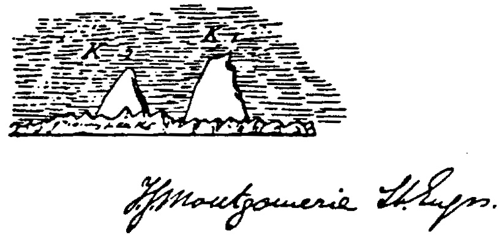
1856
K2 is first surveyed by the British Great Trigonometric Survey of India. Thomas Montgomerie, who was part of the survey, assigns the name K2, standing for "Karakoram 2."
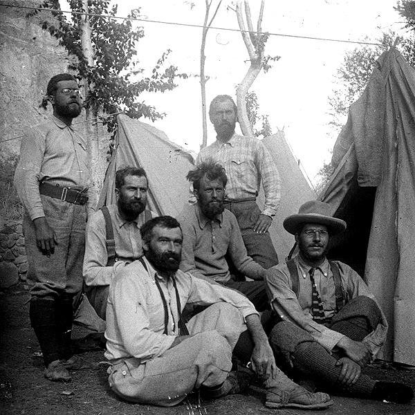
1902
Oscar Eckenstein leads a 5-man team on the first serious attempt to climb K2, reaching 6,525m (21,407 ft) using the Northeast Ridge before complications arose which made them turn back.
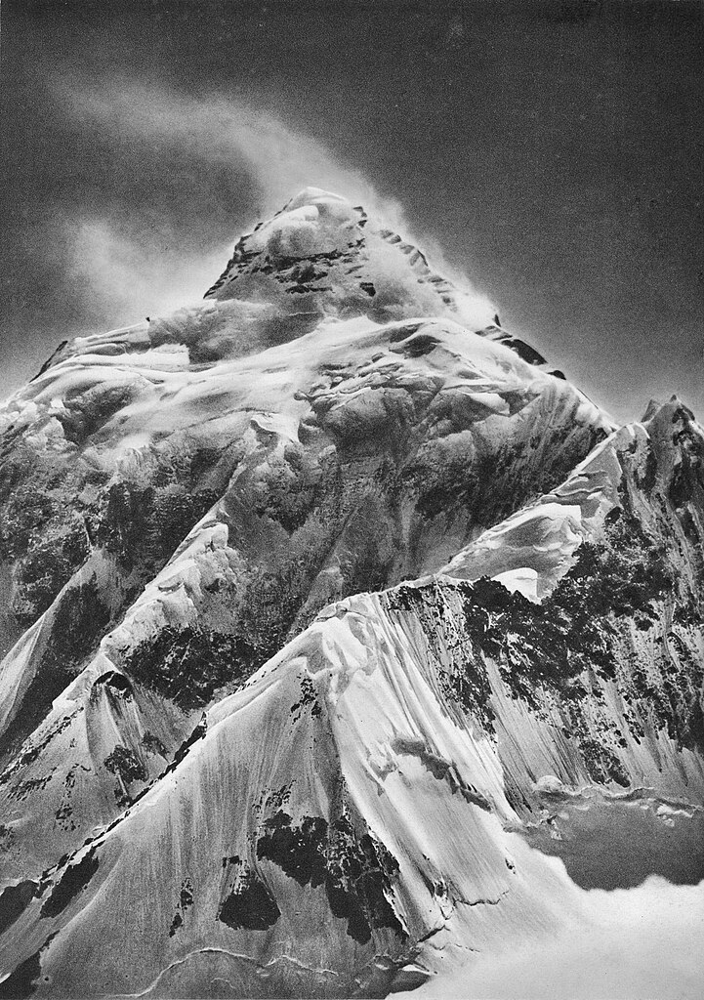
1909
An expedition led by Prince Luigi Amadeo, Duke of the Abruzzi, reaches an elevation of 6,250m (20,510 ft) on the South East Spur, known now as the Abruzzi Spur.
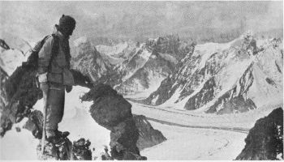
1938
An American expedition, led by Charles Houston, attempts K2. They reach around 7,925 meters (26,000 feet) on the Abruzzi Spur but are forced to turn back due to storms.
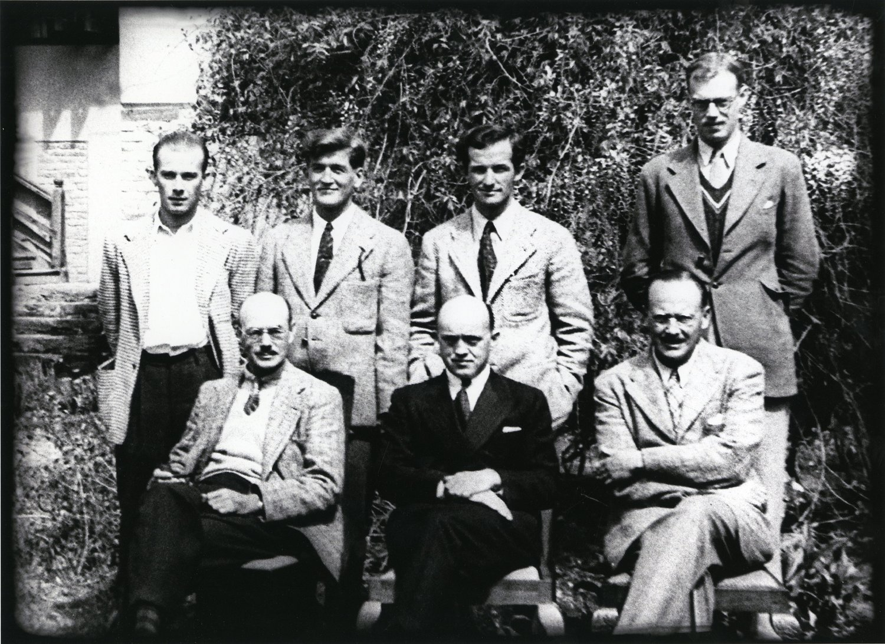
1939
An American expedition led by Fritz Wiessner with six teammates set a new altitude record on the Abruzzi Spur by reaching 8,382 m (27,500 ft).
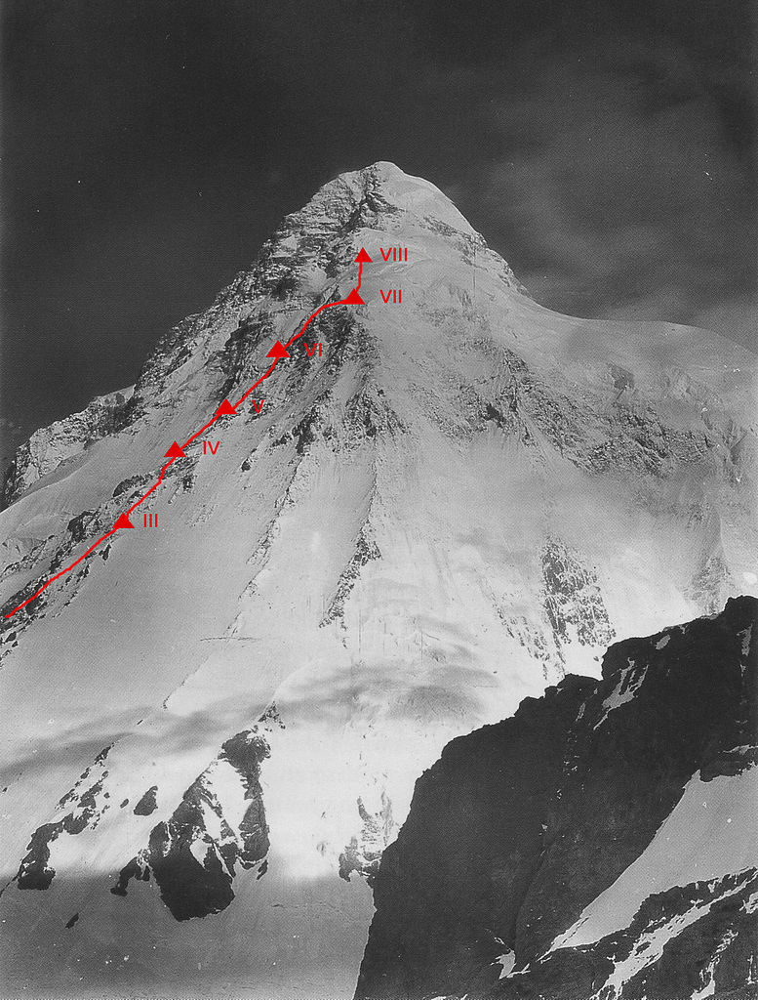
1953
Another American team led by Dr. Charles Houston reached 7,900 m on the Abruzzi Spur. One team member, Art Gilkey, was lost in an avalance due to altitude-realted health complications.
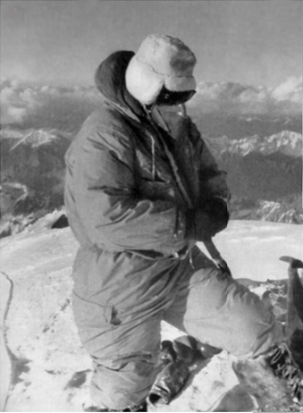
1954
On July 31, members Achille Compagnoni and Lino Lacedelli of an Italian expedition become the first people to stand on the summit, ascending via the Abruzzi Spur.
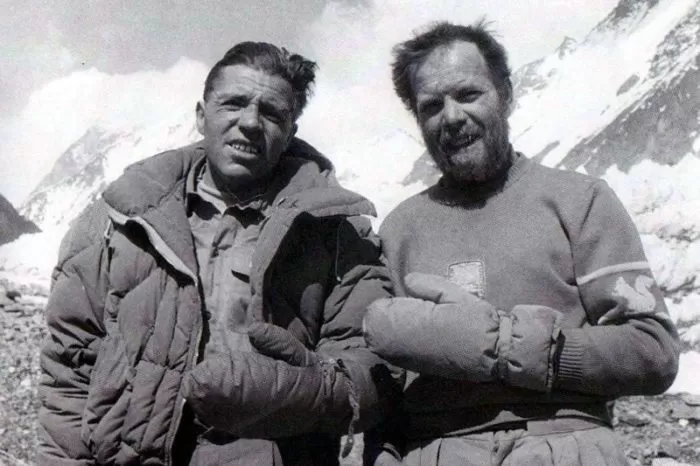
1978
Reinhold Messner and Louis Lacedelli achieve the first summit of K2 without using supplementary oxygen, showing it was possible, albeit extremely difficult.
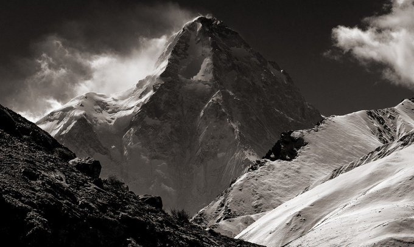
1982
A Japanese team led by Isao Shinkai and Masatsugu Konishi were the first to summit K2 from the north side, without using bottled oxygen.
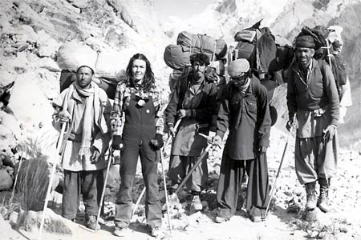
1986
Polish climber Wanda Rutkiewicz becomes the first woman to summit K2, on June 23 1986. Her climb came in a tragic season where 13 others perished, making her feat even more significant.
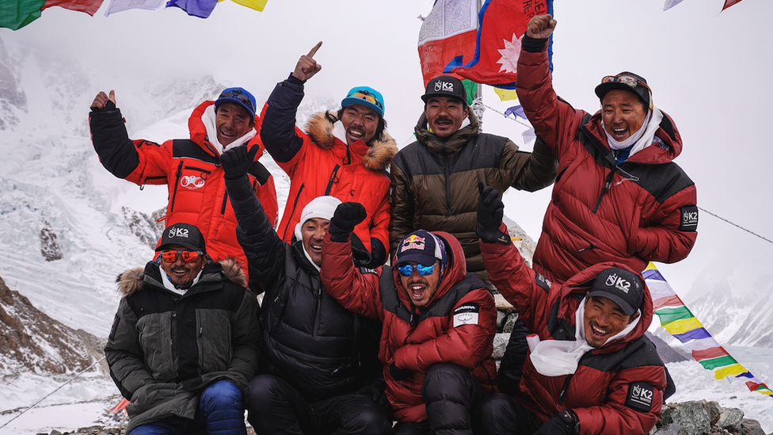
2021
Originally considered impossible due to extreme and unpredictable weather, a team of Nepali climbers led by Nirmal Purja made history by completing the first summit of K2 during winter.